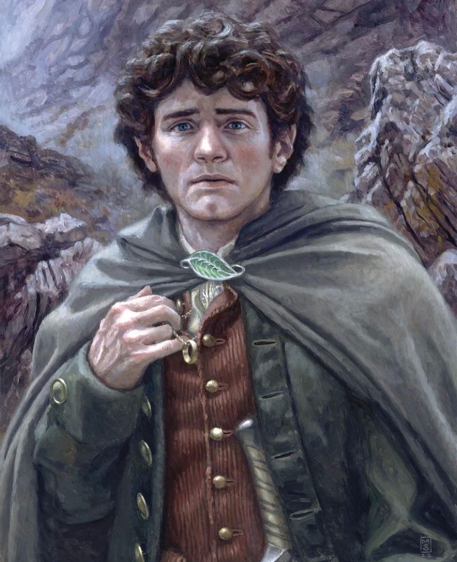

Kim jest?
Frodo Baggins to młody hobbit z Shire, który stał się jednym z najważniejszych bohaterów Śródziemia w opowieści J.R.R. Tolkiena Władca Pierścieni. Jest siostrzeńcem i dziedzicem Bilba Bagginsa, słynnego podróżnika i odkrywcy, który nieświadomie przyniósł do domu Jedyny Pierścień – narzędzie potężnego zła stworzone przez Saurona. Frodo, pomimo swojej skromności i spokojnej natury, odegrał kluczową rolę w walce o ocalenie świata. Kiedy dowiedział się o złowrogiej mocy Pierścienia, podjął się niemal niemożliwego zadania: zaniesienia go do Mordoru i zniszczenia w ogniu Góry Przeznaczenia. Na swojej drodze napotkał wiele niebezpieczeństw – od potworów, takich jak Nazgûle i pająk Szeloba, po pokusy Pierścienia, który próbował zawładnąć jego umysłem. Frodo wyróżnia się odwagą, lojalnością i niezwykłą determinacją, mimo że nie jest wojownikiem ani posiadającym specjalne zdolności czarodziejem. Jego siła tkwi w jego niezłomnej woli i wierności wobec przyjaciół. Jego najlepszy przyjaciel, Samwise Gamgee, towarzyszył mu przez całą podróż, wspierając go w najciemniejszych chwilach. Choć Frodo zdołał ukończyć swoją misję, poniósł wielkie osobiste koszty. Zmagał się z fizycznym i psychicznym bólem, które na zawsze zmieniły jego życie. Po zakończeniu wojny opuścił Shire i udał się na Zachód z elfami, szukając ukojenia i uzdrowienia po trudach swojej misji.